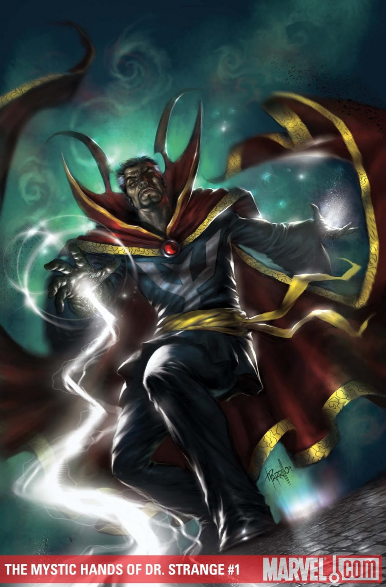

The first movie explains how Doctor Strange acquires his abilities following an accident that completely fractured the bones in his hands to the point that he would ended his career as a doctor. He had to struggle and eventually found some wizards in order to be able to use his hands without shaking.
The character starts as a brilliant but egotistically arrogant neurosurgeon whose hands get injured in a car accident. Because his hands have severe nerve damage from the accident, he is told that current medical therapy and rehabilitation would not be enough to enable him to practice again as a surgeon. Unable to accept this prognosis, he starts to travel the world searching for alternative ways of healing, which leads him to the Ancient One, the Sorcerer Supreme. Strange becomes his student and learns to be a master of both the mystical and the martial arts. He acquires an assortment of mystical objects, including the powerful Eye of Agamotto and Cloak of Levitation, and takes up residence in a mansion referred to as the Sanctum Sanctorum, located at 177A Bleecker Street, Greenwich Village, New York City. Strange assumes the title of Sorcerer Supreme and, with his friend and valet Wong, defends the world from mystical threats.
